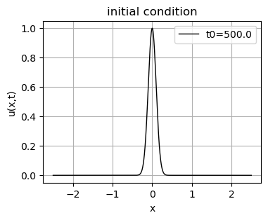
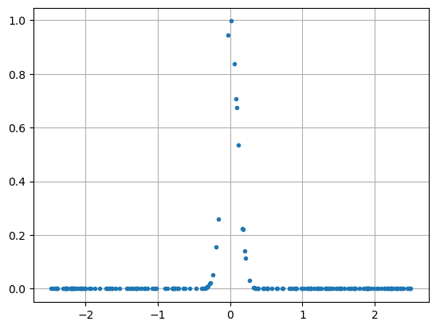
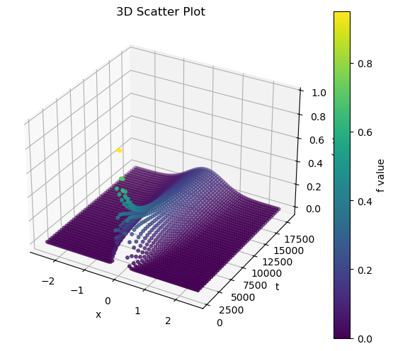
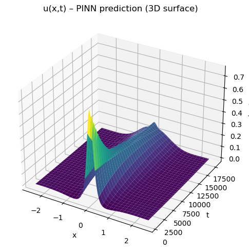
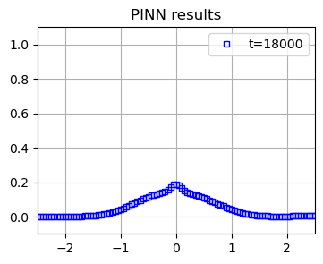
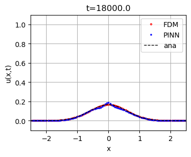

PINN for solving PDEs#
In this coding assignment, we will use PINN to simulate diffusion in 1D.
This code is mainly generated by ChatGPT 5.1.
Part 1. 1D diffusion equation.#
The diffusion equation is
Its analytical solution is
Part 1.1. Plot the initial condition (analytical solution).#
Plot the initial condition \(u(x,t)\) at \(t=t_0\). Here, we set \(t_0=500\) and \(D=10^{-5}\).
import numpy as np
import matplotlib.pyplot as plt
# parameters
t0 = 500.0
D = 1.0e-5
x = np.linspace(-2.5, 2.5, 2001)
t = t0
u = np.sqrt(t0/t) * np.exp(-(x**2) / (4.0 * D * t))
plt.figure(figsize=(4,3))
plt.plot(x, u, 'k-', linewidth=1, label=f"t0={t0}")
plt.grid(True)
plt.legend()
plt.xlabel("x")
plt.ylabel("u(x,t)")
plt.title("initial condition")
plt.show()

Part 2. PINN for 1D diffusion equation#
Load relevant libraries: math and PyTorch
PyTorch uses different data structure from numpy, such that the values can be moved between CPU and GPU. In some code cells below, you will see
to(device), which is for moving data to specific device for further calculations.When using plotting functions, we will need to convert PuTorch data back to numpy data.
import math
import torch
import torch.nn as nn
import torch.autograd as autograd
device = torch.device("cuda" if torch.cuda.is_available() else "cpu")
print("Using device:", device)
Using device: cpu
Part 2.1. Problem set-up#
The analytical solution, which is not used in training, but for generating syntheic training data.
# ============================================================
# 1. exact solution
# ============================================================
# "Hidden" exact solution used ONLY to generate synthetic data,
# not used in the PINN loss.
def exact_solution(x, t, t0, D):
# A slightly richer combination than a single mode
# u(x,t) = sqrt(t0/t) * exp (-x^2/(4*D*t))
return (torch.sqrt(t0/t) * torch.exp(-x**2/(4*D*t)))
Build ANN model. This is similar to those in the previous classes.
# ============================================================
# 2. PINN model
# ============================================================
class PINN(nn.Module):
def __init__(self, layers):
super().__init__()
modules = []
for i in range(len(layers) - 1):
modules.append(nn.Linear(layers[i], layers[i+1]))
if i < len(layers) - 2:
modules.append(nn.Tanh())
self.net = nn.Sequential(*modules)
def forward(self, x, t):
# x, t: (N, 1)
inp = torch.cat([x, t], dim=1)
return self.net(inp)
Prepare training data.
The time variables are scaled to be in \([0, 1]\) for trainig efficiency.
There are four sets of training data, each for calculating the loss of the predicted values against
PDE
initial condition
boundary condition
training data
Note that the synthetic training data are the exact solution, i.e., the NN model is trained using values of exact solution (as the true label in supervised learning).
Defining various sources of loss function is the critical part to PINN.
# ============================================================
# 3. Training data
# ============================================================
t_min, t_max = 500.0, 18000.0
# (A) PDE collocation points in interior
N_f = 6000
x_f = -2.5 + 5.0 * torch.rand(N_f, 1) # 5.0 = 2.5 - (-2.5)
t_f = 500.0 + (18000.0 - 500.0) * torch.rand(N_f, 1)
# scaled time s in [0,1]
s_f = (t_f - t_min) / (t_max - t_min)
# (B) Initial condition: u(x,0) = exp(-x^2/4/D/t)
N_ic = 200
x_ic = -2.5 + 5.0 * torch.rand(N_ic, 1)
t_ic = 500 * torch.ones_like(x_ic)
s_ic = (t_ic - t_min) / (t_max - t_min) # scaled time
u_ic = torch.exp(-x_ic**2/(4*D*t0))
# (C) Boundary points (Dirichlet u=0 at x=0,1)
N_bc = 200
t_bc = 500.0 + (18000.0 - 500.0) * torch.rand(N_bc, 1)
s_bc = (t_bc - t_min) / (t_max - t_min) # scaled time
x_bc0 = torch.ones_like(t_bc)*(-2.5) # at west boundary
x_bc1 = torch.ones_like(t_bc)*( 2.5) # at east boundary
# (D) Interior data points (simulate measurements at some times)
# For example, sample data at 5 time slices between 0 and 1 (excluding t=0)
x_data_list = []
t_data_list = []
u_data_list = []
# grid points in space and time for generating training data.
time_slices = torch.linspace(500, 18000, 40).view(-1, 1)
Nx_per_slice = 80
for tt in time_slices:
x_tmp = torch.linspace(-2.5, 2.5, Nx_per_slice).view(-1, 1)
t_tmp = tt * torch.ones_like(x_tmp)
u_tmp = exact_solution(x_tmp, t_tmp, t0, D)
x_data_list.append(x_tmp)
t_data_list.append(t_tmp)
u_data_list.append(u_tmp)
x_data = torch.vstack(x_data_list)
t_data = torch.vstack(t_data_list)
s_data = (t_data - t_min) / (t_max - t_min) # scaled time
u_data = torch.vstack(u_data_list)
# Move everything to device
x_f = x_f.to(device)
t_f = t_f.to(device)
s_f = s_f.to(device) # scaled time
x_ic = x_ic.to(device)
t_ic = t_ic.to(device)
s_ic = s_ic.to(device) # scaled time
u_ic = u_ic.to(device)
x_bc0 = x_bc0.to(device)
x_bc1 = x_bc1.to(device)
t_bc = t_bc.to(device)
s_bc = s_bc.to(device) # scaled time
x_data = x_data.to(device)
t_data = t_data.to(device)
s_data = s_data.to(device) # scaled time
u_data = u_data.to(device)
Before going to model training, let’s examine the synthetic initial condition for training.
import matplotlib.pyplot as plt
plt.figure()
plt.plot(x_ic, u_ic,'.')
plt.grid(True)
plt.show()

Examine the synthetic training data of interior points.
Note that the data points are plotted on a space-time grid system. The \(x\) and \(t\) axes are for space and time, respectively.
import numpy as np
import matplotlib.pyplot as plt
from mpl_toolkits.mplot3d import Axes3D # needed for 3D plotting
# %matplotlib ipympl
# Example sample data (replace with your real x, y, f)
x = np.array(x_data_list)
y = np.array(t_data_list)
f = np.array(u_data_list)
# 3D scatter plot
fig = plt.figure(figsize=(7,6))
ax = fig.add_subplot(111, projection='3d')
sc = ax.scatter(x, y, f, c=f, cmap='viridis', s=10)
ax.set_xlabel("x")
ax.set_ylabel("t")
ax.set_zlabel("u(x,t)")
ax.set_title("3D Scatter Plot")
fig.colorbar(sc, ax=ax, label="f value")
plt.show()

# examine the range of data spread
print(np.min(x_f.detach().numpy()), np.max(x_f.detach().numpy()))
print(np.min(t_f.detach().numpy()), np.max(t_f.detach().numpy()))
print(np.min(s_f.detach().numpy()), np.max(s_f.detach().numpy()))
-2.4995816 2.4998827
500.73224 17995.969
4.1842217e-05 0.9997696
Initialize the PINN model.
Two input fearures \(x\) and \(t\).
Three hidden layer, each of which contains 64 neurons.
One output value, \(u\).
layers = [2, 64, 64, 64, 1]
model = PINN(layers).to(device)
print(model)
PINN(
(net): Sequential(
(0): Linear(in_features=2, out_features=64, bias=True)
(1): Tanh()
(2): Linear(in_features=64, out_features=64, bias=True)
(3): Tanh()
(4): Linear(in_features=64, out_features=64, bias=True)
(5): Tanh()
(6): Linear(in_features=64, out_features=1, bias=True)
)
)
Loss function of the prediction againt the PDE. If the residual equals zero, the PDE is satisfied.
# ============================================================
# 4. PDE residual (u_t - D u_xx)
# ============================================================
def pde_residual(x_in, s_in, D, t_min, t_max):
x = x_in.clone().detach().requires_grad_(True)
s = s_in.clone().detach().requires_grad_(True)
# model prediction
u = model(x, s)
# du/ds: time derivative
u_s = autograd.grad(u, s, grad_outputs=torch.ones_like(u),
create_graph=True)[0]
# du/dx: 1st order spatial derivative
u_x = autograd.grad(u, x, grad_outputs=torch.ones_like(u),
create_graph=True)[0]
# d2u/dx2: 2nd order spatial derivative
u_xx = autograd.grad(u_x, x, grad_outputs=torch.ones_like(u_x),
create_graph=True)[0]
# scaling between real time (t) and scaled time (s).
dt_ds = (t_max - t_min)
u_t = u_s / dt_ds
return u_t - D * u_xx
Part 2.2. Model training#
Train the PINN model. Note that the total loss function consists of 4 sources: PDE, IC, BC, and data.
We use values of \(\lambda_i\) to weigh the contributions from different sources to the loss function. Using the weighing factors, we can train the model to focus on specific losses. For instance, if we set
lambda_pde = lambda_ic = lambda_bc = 0, the model will be trained to correct it weights based only the loss between training data, without any contribution from other sources.
# ============================================================
# 5. Training
# ============================================================
optimizer = torch.optim.Adam(model.parameters(), lr=1e-3)
num_epochs = 3000
# weighing factors of different sources of loss
lambda_pde = 1.0e-3
lambda_ic = 1.0e-3
lambda_bc = 1.0e-3
import time
start = time.time()
# iteration
for epoch in range(num_epochs):
optimizer.zero_grad()
# PDE loss (interior)
f_res = pde_residual(x_f, s_f, D, t_min, t_max)
loss_pde = torch.mean(f_res**2)
# Initial condition loss
u_pred_ic = model(x_ic, s_ic)
loss_ic = torch.mean((u_pred_ic - u_ic)**2)
# Boundary loss (Dirichlet: u=0)
u_bc0 = model(x_bc0, s_bc)
u_bc1 = model(x_bc1, s_bc)
loss_bc = torch.mean(u_bc0**2) + torch.mean(u_bc1**2)
# Data loss (fitting interior measurements)
u_pred_data = model(x_data, s_data)
loss_data = torch.mean((u_pred_data - u_data)**2)
# Total loss
loss = (lambda_pde * loss_pde + lambda_ic * loss_ic +
lambda_bc * loss_bc + loss_data)
loss.backward()
optimizer.step()
if (epoch + 1) % 200 == 0:
print(f"Epoch {epoch+1:4d} | "
f"loss={loss.item():.3e}, "
f"pde={loss_pde.item():.3e}, "
f"ic={loss_ic.item():.3e}, "
f"bc={loss_bc.item():.3e}, "
f"data={loss_data.item():.3e}")
stop = time.time()
elapse = stop - start
print("Training finished!")
print(f"elapse time: {elapse:3f}")
Epoch 200 | loss=1.568e-03, pde=1.404e-11, ic=1.372e-02, bc=8.489e-04, data=1.554e-03
Epoch 400 | loss=6.604e-04, pde=7.144e-11, ic=8.576e-03, bc=3.525e-04, data=6.515e-04
Epoch 600 | loss=4.890e-04, pde=1.228e-10, ic=6.726e-03, bc=6.406e-05, data=4.822e-04
Epoch 800 | loss=4.031e-04, pde=1.606e-10, ic=5.788e-03, bc=3.139e-05, data=3.973e-04
Epoch 1000 | loss=3.287e-04, pde=1.826e-10, ic=4.978e-03, bc=3.317e-05, data=3.237e-04
Epoch 1200 | loss=2.797e-04, pde=2.051e-10, ic=4.315e-03, bc=3.459e-05, data=2.753e-04
Epoch 1400 | loss=2.395e-04, pde=2.260e-10, ic=3.717e-03, bc=4.124e-05, data=2.358e-04
Epoch 1600 | loss=2.122e-04, pde=2.411e-10, ic=3.328e-03, bc=3.909e-05, data=2.088e-04
Epoch 1800 | loss=7.430e-04, pde=2.555e-10, ic=3.570e-03, bc=1.665e-03, data=7.378e-04
Epoch 2000 | loss=1.654e-04, pde=2.666e-10, ic=2.652e-03, bc=2.150e-05, data=1.628e-04
Epoch 2200 | loss=1.511e-04, pde=2.772e-10, ic=2.440e-03, bc=1.366e-05, data=1.487e-04
Epoch 2400 | loss=1.364e-04, pde=2.868e-10, ic=2.189e-03, bc=7.977e-06, data=1.342e-04
Epoch 2600 | loss=1.258e-04, pde=2.884e-10, ic=2.017e-03, bc=4.605e-06, data=1.237e-04
Epoch 2800 | loss=1.174e-04, pde=2.850e-10, ic=1.885e-03, bc=4.402e-06, data=1.155e-04
Epoch 3000 | loss=1.116e-04, pde=2.774e-10, ic=1.802e-03, bc=5.502e-06, data=1.098e-04
Training finished!
elapse time: 220.390940
Test the model with synthetic test data. We create a space-time grid system as the test data and subtitute them into the model for prediction.
# ---------------------------
# 6. Evaluate on a grid (optional)
# ---------------------------
Nx, Nt = 101, 101
x = torch.linspace(-2.5, 2.5, Nx).view(-1, 1).to(device)
s = torch.linspace(0, 1, Nt).view(-1, 1).to(device)
X, S = torch.meshgrid(x.squeeze(1), s.squeeze(1), indexing='ij')
x_test = X.reshape(-1, 1)
s_test = S.reshape(-1, 1)
# --------------------------
# 7. Prediction
# --------------------------
model.eval()
# predict
with torch.no_grad():
u_pred = model(x_test,s_test).cpu().numpy() # shape (Nx*Nt, 1) or (Nx*Nt,)
print("u_pred shape on grid:", u_pred.shape)
u_pred shape on grid: (10201, 1)
visualize the prediction from ANN model on the space-time grid system.
import numpy as np
import matplotlib.pyplot as plt
from mpl_toolkits.mplot3d import Axes3D # needed for 3D surface
%matplotlib inline
U = u_pred.reshape(Nx, Nt) # U[i, j] ≈ u(x_i, t_j)
X_np = X.cpu().numpy()
T_np = S.cpu().numpy() *(t_max - t_min) + t_min
fig = plt.figure(figsize=(7, 5))
ax = fig.add_subplot(111, projection='3d')
ax.plot_surface(
X_np, T_np, U,
cmap='viridis',
linewidth=0,
antialiased=True
)
ax.set_xlabel('x')
ax.set_ylabel('t')
ax.set_zlabel('u(x,t)')
ax.set_title('u(x,t) – PINN prediction (3D surface)')
plt.tight_layout()
plt.show()

Plot u at different time frames to show the concentration evolution in time.
import matplotlib.pyplot as plt
from IPython.display import display, clear_output
import time
plt.clf()
# Initialization before the loop
fig, ax = plt.subplots(figsize=(4, 3))
ax.set_xlim(-2.5, 2.5)
ax.set_ylim(-0.1, 1.1)
# loop over each time frame
for it in range(T_np.shape[1]):
# visualization
# --- clear axes, not the whole figure
ax.clear()
# get time and data
tm = T_np[0, it]
ax.plot(X_np[:, 0], U[:, it], 'bs', markersize=4,
markerfacecolor='none', label=f"t={tm:.0f}")
ax.set_title("PINN results")
ax.set_xlim(-2.5, 2.5)
ax.set_ylim(-0.1, 1.1)
ax.grid(True)
ax.legend()
# animation part
clear_output(wait=True) # clear previous output
display(fig) # show updated figure
time.sleep(0.2) # pause a bit

Part 3. Compare to numerical solution.#
Compared to finite difference method (FDM)#
In the previous classes, we used finite difference method (FDM) to simulate 1D diffusion. Here, let’s make a comparsion between NN-learned solution and FDM solution. The FDM stencil for 1D diffusion equation is
i.e.,
# 1D grid, grid spacing, and time step size.
N = 101
xi = np.linspace(-2.5, 2.5, N)
dx = xi[1] - xi[0]
dt = 10.0
# initial concentraion
tm = t0;
Ci = np.sqrt(t0/tm)*np.exp(-xi*xi/(4*D*tm))
# Initialization before the loop
fig.clear()
fig, ax = plt.subplots(figsize=(4, 3))
ax.set_xlim(-2.5, 2.5)
# time iteration
cnt = 0
for it in range(18001):
# explicit update using Euler method
# vectorized computing
Ci[1:-1] += dt * D * (Ci[0:-2] - 2*Ci[1:-1] + Ci[2:])/dx**2
# Bboundary conditions
Ci[0] = 0
Ci[-1] = 0
# visualization every 175 time unit to match the time frames NN results
if tm >= 175*cnt + 500:
ax.clear()
# FDM results
ax.plot(xi, Ci, 'ro', markersize=2,
markerfacecolor='none', label="FDM")
# NN results
ax.plot(X_np[:, 0], U[:, cnt], 'bs', markersize=2,
markerfacecolor='none', label="PINN")
# analytical results
C_an = np.sqrt(t0/tm) * np.exp(-(xi**2) / (4.0 * D * tm))
ax.plot(xi, C_an, 'k--', linewidth = 1, label="ana")
ax.set_title(f"t={tm:.1f}")
ax.set_xlabel("x")
ax.set_ylabel("u(x,t)")
ax.set_xlim(-2.5, 2.5)
ax.set_ylim(-0.1, 1.1)
ax.grid(True)
ax.legend()
# animation part
clear_output(wait=True) # clear previous output
display(fig) # show updated figure
time.sleep(0.2) # pause a bit
if tm >= 18000:
break
cnt += 1
tm += dt

Discussion: the relationship between analytical, numerical and machine learning results.#
This link goes to a cool website that uses graphs to demonstrate the work flow of neural network.#
https://playground.tensorflow.org#
MLIP: machine learning interatomic potentials.